Abstract
HeLM introduces explicit language memory for VLM-guided non-Markovian manipulation. A high-level vision-language model maintains working memory within an episode and episodic context across episodes. Memory is updated when a task-relevant event occurs, and action commands guide a low-level robot policy.
We evaluate HeLM on 10 real-world tasks with 56 variants, covering counting, ordered actions and object history, including five inter-episode tasks that require persistent context across instruction boundaries. HeLM improves intra-episode subtask success by 12.8 percentage points over the strongest baseline and achieves 78% subtask success on compositional generalization tasks. The paper reports up to 4.5× less memory and 2.5× faster inference than the keyframe baseline at long horizons.
01 / MOTIVATION
Why memory is needed
After a button is released, the scene can look almost unchanged. A policy that sees only the current observation can repeat a completed action.
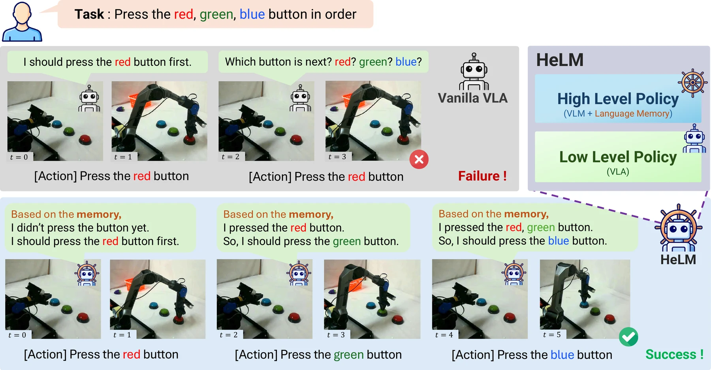
Interactive example: button-order memory
Progress determines the next action
The instruction stays the same: press red, green, then blue. Select a step to see how the memory records completed presses and changes the next command.
Photographs illustrate the selected button action. Progress and commands follow the task specification; photos are not synchronized rollout frames.
Progress: red
Select a step. The memory changes the next action.
02 / THE METHOD
HeLM framework
Hierarchical Explicit Language Memory
HeLM separates deciding what comes next from executing the movement. The high-level vision-language model (HLP) manages memory; the low-level action policy (LLP) controls the robot.
HIGH-LEVEL POLICY · VLM
HLP: detect events and maintain memory
Detect and Update are two modes of the same vision-language model.
- 01
Visual Event Detection
At each action-chunk boundary, read the observation, memory and current command. Report a task-relevant event or
DETECTnone. - 02
Memory Update
When an event is detected or the instruction changes, update language memory and choose the next action command. Otherwise, retain both.
- Working memory
- Progress within the current instruction.
Count: 2 (Goal: 3) - Episodic context
- Relevant history retained across instructions.
Previous_Count: 3
LOW-LEVEL POLICY · VLA
Low-Level Action Execution
Use the HLP’s command and current observations to produce an action chunk for the robot. At the next chunk boundary, the HLP checks for a new event.
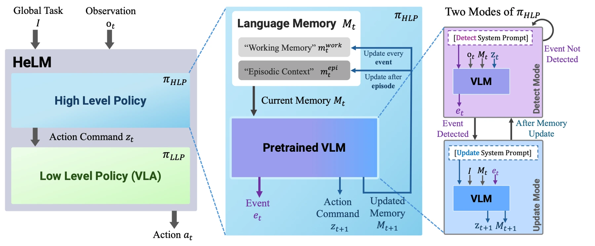
The high-level policy maintains language memory and chooses an action command. The low-level policy turns that command into robot actions. Detect and update are two modes of the same VLM.
Go deeper: event-triggered updates
Detect mode emits a task-relevant event or none. Update mode runs when an event is detected or the global instruction changes. Working memory tracks the current task; episodic context carries information across task boundaries.

03 / TASKS
Real-world tasks
Select a task to view its description and available recording. The suite contains 10 tasks and 56 variants, covering intra-episode and inter-episode tasks. Inter-episode video is provided for Human-Order Press.
Inspect task-specification memory states
Select “Inspect memory” on a task to see its instructions, progress and memory states. These are task-specification examples, separate from the recorded videos. This explorer contains 51 repository variants; the paper evaluates 56 variants.
Reference photographs switch to matching actions or outcomes when available; they are not synchronized rollout frames. Window regions use the robot’s frame. Missing drawer-specific photographs are marked as setup references. Progress and memory follow the task specifications. Playback timing is illustrative. For cross-episode memory, try E1 and follow the new-instruction marker.
See the real-world task setups
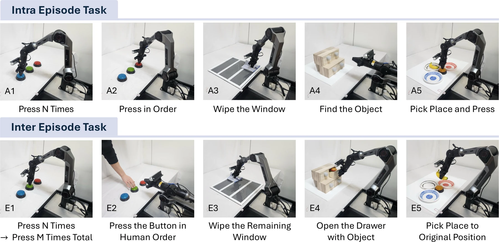
04 / THE EVIDENCE
Evaluation results
Real-world evaluation across 10 tasks. The evaluation protocol uses 15–45 trials per task (3–9 variants, 5 trials each). Intra-episode results in Figure 5 use 15–30 trials per task. Subtask success and strict task success are reported separately.
Main result
INTRA-EPISODE COMPARISON
Intra-episode subtask and strict task success
Intra-episode task results
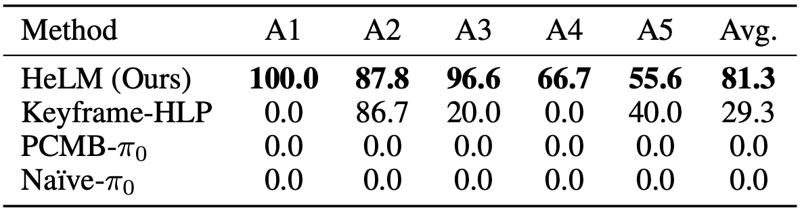
The bar chart above presents both subtask success (Figure 5) and strict task success. Strict success requires correct order and proper termination.
Inter-episode task results
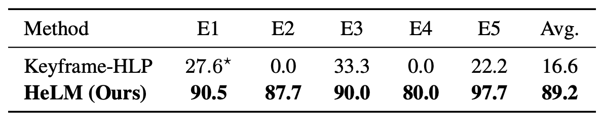
★ indicates failure to terminate. PCMB-π₀ and Naïve-π₀ reset their internal states at episode boundaries and are excluded from this comparison.
01Failure analysisResearch question: Which components account for the observed task failures?
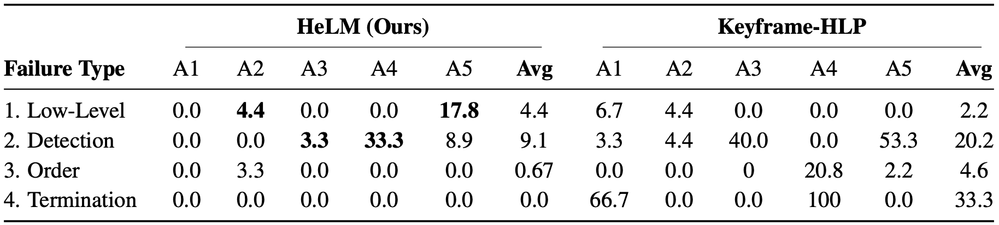
The main-text analysis identifies Detection and Low-Level Execution as the dominant HeLM failure categories; Termination failures were not observed. Table 7 provides the per-task breakdown.
02Memory and HLP fine-tuningResearch question: How do explicit language memory and HLP fine-tuning affect task success?
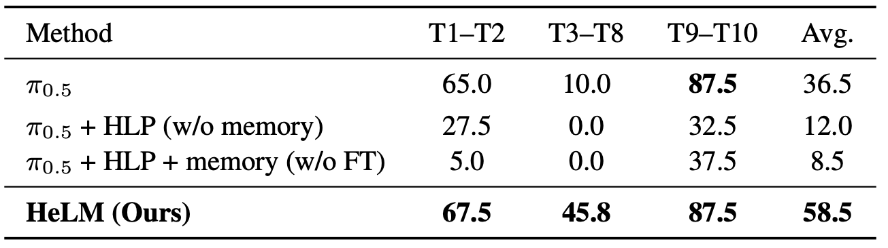
All configurations use π₀.₅ as LLP. On T3–T8, HeLM achieves 45.8% task success, while both HLP ablations achieve 0%.
03Two-stage inferenceResearch question: Does separating event detection from memory updates improve subtask success?
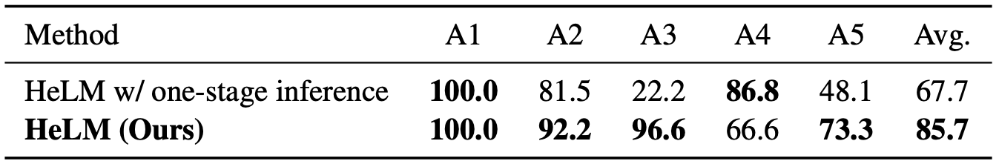
The one-stage variant jointly predicts events, memory and commands at each HLP call. HeLM separates event detection from event-triggered updates.
04Compositional generalizationResearch question: Can the HLP handle held-out task compositions without additional fine-tuning?
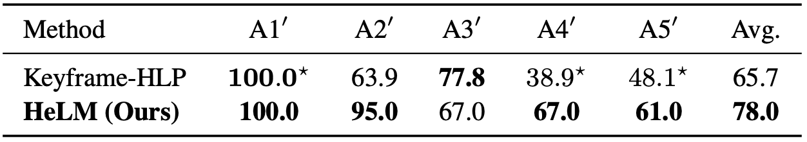
Held-out variants combine learned subtasks without additional HLP fine-tuning. ★ indicates failure to terminate.
05Task-length robustness and memory scalingResearch question: How do task success and inference cost change as task history grows?
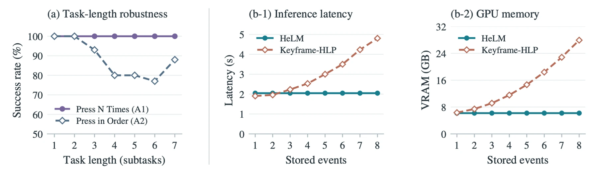
A1 remains at 100% through seven subtasks; A2 ranges from 77% to 100%. At long horizons, the paper reports up to 4.5× less memory and 2.5× faster inference than Keyframe-HLP with the same Qwen2.5-VL-7B HLP backbone.
06Additional simulation evaluation: LIBERO-MemResearch question: How does HeLM perform on the LIBERO-Mem simulation benchmark?
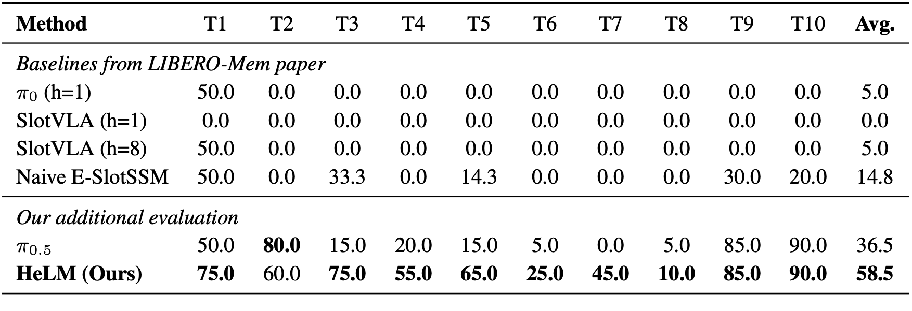
Per-task simulation results complement the real-world experiments. The table separates baselines reported by the LIBERO-Mem paper from the authors’ additional evaluation.
05 / EXPLORE THE PROJECT
Code and resources
Task specifications, the data pipeline, HLP training and robot evaluation code are available in the repository.
Explore the codeBibTeX
Author order and title follow the manuscript. Available as arXiv:2611.02660.
@misc{helm2026,
author = {Kim, Gyeonghun and Kim, Donghoon and Choi, Minsoo and Lee, Suyun},
title = {HeLM: Hierarchical Explicit Language Memory for Non-Markovian Manipulation},
year = {2026},
eprint = {2611.02660},
archivePrefix = {arXiv},
url = {https://arxiv.org/abs/2611.02660}
}